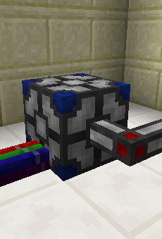

This block relays signals
between a Project Red Bundled Cable and a MineFactory Reloaded RedNet
cable.
Configuration
Before using the adaptor block, you need to use its GUI to configure
which direction each of the signals travels in. There are three
possible settings for each signal: Bundled Cable to Rednet, Rednet to
Bundled Cable, or Disconnected.
Left-click on a signal to change its direction, and right-click it to
connect or disconnect.